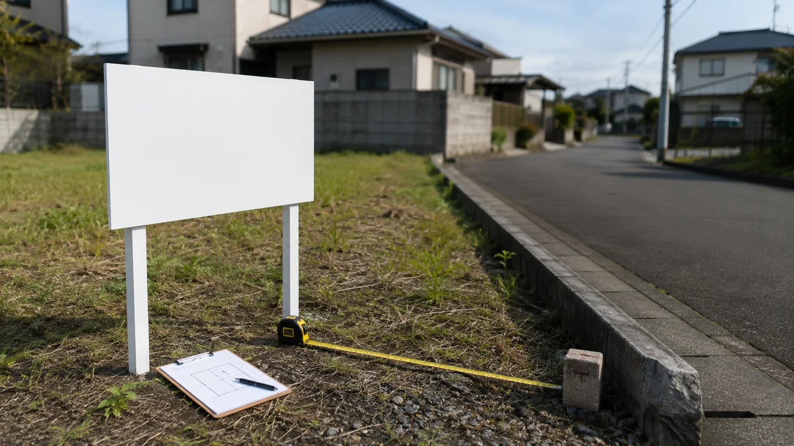
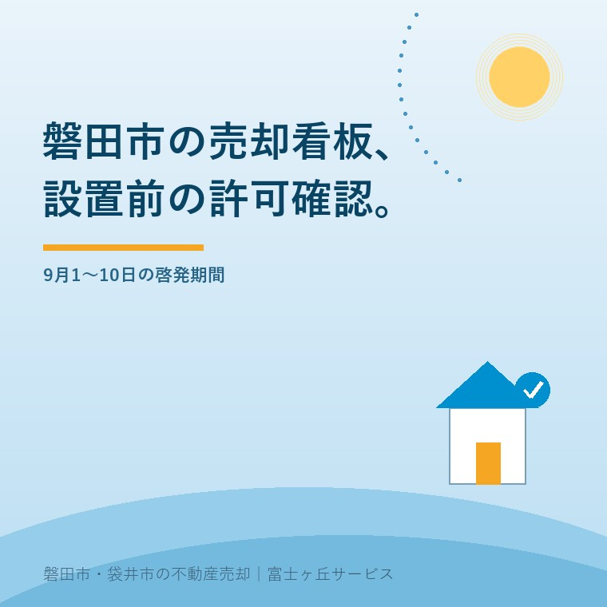

2026年9月6日｜カテゴリ：磐田市／売却実務／屋外広告物


この記事の要点
Q. 磐田市の土地へ「売物件」の看板を立てるとき、許可は要りますか。
A. 売却看板も屋外広告物になり得るため、①規制地域、②広告区分と適用除外、③面積・高さ・構造、④道路と境界、⑤施工者・期間・撤去を設置前に磐田市へ確認します。5㎡以内でも自動的に許可不要とは言えません。
磐田市では、売主、地域密着の不動産会社、市の屋外広告物窓口が同じ配置図と看板案を見てから発注するのが確実です。
静岡県は2026年9月1日から10日までを「屋外広告物適正化旬間」と案内しています。指定された県公式ページは2026年8月10日更新で、看板は設置場所によって申請が必要な場合があると注意を促しています。
磐田市は、一定期間継続して屋外で公衆に向け、看板や広告板などへ表示するものを屋外広告物と説明しています。営利か非営利かにかかわらず、表示内容だけでは対象外になりません。
意外なのは、自己所有地へ置く看板でも規制の対象になり得ることです。敷地内なら無条件でよい、という仕組みではありません。規制地域と広告区分、適用除外を順に見ます。
磐田市内には第1種・第2種の特別規制地域と、第1種・第2種の普通規制地域があります。一般広告物は普通規制地域では許可が必要で、特別規制地域には設置できないと市が案内しています。
ただし、売却物件は不動産会社の営業所ではありません。「会社名が入るから自家広告物」とは決めません。売主が出すのか、媒介会社が出すのか、何を表示するかで、市へ区分を確認します。
静岡県のガイドブックは、所有または管理する土地・物件に管理上の必要から設置する広告物について、一つの土地・物件につき表示面積5㎡以内なら適用除外としています。
ここは迷うところです。「売物件」「管理地」と表示する看板は、管理上の広告物と読めそうに見えます。しかし、県と磐田市の公式資料は、売却看板を管理広告物に含むと明記していません。不動産会社名、電話番号、価格、二次元コードを載せると、販売のための一般広告物と判断される可能性もあります。
私は、5㎡以下という数字だけで許可不要とは案内しません。看板の寸法、両面表示の有無、文案、設置者、地番、位置図を磐田市へ送り、回答を残します。適用除外でも、禁止物件や安全上の禁止は別に守ります。
| 確認項目 | 市へ伝える内容 | 決めつけないこと |
|---|---|---|
| 規制地域 | 地番、位置図、道路名 | 用途地域だけで広告規制を判断しない |
| 広告区分 | 表示文、会社名、価格、連絡先 | 現地看板を自家広告物と決めない |
| 適用除外 | 所有・管理関係、目的、合計面積 | 5㎡以内なら全部不要としない |
| 形と位置 | 高さ、面積、構造、配置図、写真 | 敷地内なら自由としない |
| 施工と撤去 | 施工者、設置期間、撤去日 | 媒介終了後も残せるとしない |
磐田市で売却看板を設置する前は、規制地域、区分、寸法、境界、施工・撤去の5確認を終えてから印刷と工事を発注します。許可が要る場合は、許可後に設置します。
磐田市の地図情報提供サービスで屋外広告物の規制情報を見ます。地図は入口です。敷地が区域の境に近い場合や、表示面が道路・鉄道へ向く場合は、画面を保存して市へ確認します。
「売物件」の文字だけでなく、価格、会社名、電話番号、二次元コード、矢印、物件から離れた案内看板の有無を書きます。現地から離れた誘導看板は、案内広告物として別の基準になります。
縦と横、地面からの高さ、片面か両面か、支柱、基礎、素材を図にします。高さ4mを超える堅ろうな広告物は、管理者や工作物確認に関する書類も挙げられています。一般的な売却看板をむやみに大きくする理由はありません。
橋、トンネル、石垣、擁壁、街路樹、信号機、道路標識、道路上の柵、カーブミラー、消火栓、道路の路面などは原則として禁止物件です。看板の板面だけでなく、支柱や基礎も敷地境界の内側へ収めます。
境界標が見つからない土地は、道路側へ寄せて置く前に境界標と隣地立会いの確認順を見てください。道路を占用する場合の手続と、屋外広告物の手続は同じではありません。
設置工事を業者へ依頼する場合は、静岡県の屋外広告業登録を受けた業者か確かめます。売主、不動産会社、施工者のうち誰が申請し、日常点検し、売買成立や媒介終了後に外すかを決めます。
磐田市の案内の良い点は、規制地域の説明、申請書、必要図面、手数料、変更・除却の様式まで一つのページにまとまっていることです。新規申請は書類2部で、案内図、配置図、仕様・設計図、意匠図、周辺写真などを用意します。
許可が必要な照明なしの広告物は、表示面積5㎡ごとに1,330円です。照明ありは5㎡ごとに1,600円。2026年4月1日からの手数料として市が掲載しています。小さな看板でも、作り直しの方が申請手数料より高くなります。
その上で、売主向けには「現地の売却看板はどの区分か」という例を一つ加えてほしいところです。公式資料に明記がないからこそ、市は事前相談を受けています。窓口は磐田市役所西庁舎2階の都市計画課、電話は0538-37-4907、受付時間は午前8時30分から午後5時15分です。
大石浩之（磐田市／不動産業）として、私はこう考えます。自分の土地でも、看板を勝手に立ててよいとは限りません。看板代より先に、場所・表示内容・面積を市の窓口へ出す。設置後に許可を聞くのが一番高くつきます。
販売図面を売主が読む記事では、取引態様、備考、写真の確認を説明しました。看板だけ価格が古い、連絡先が担当者個人だけ、現地写真と販売図面の向きが違う、といったずれをなくします。
看板を見た人の問い合わせは、物件名や地番が曖昧になりがちです。電話番号や二次元コードの先で、どの物件かを特定できる質問を用意します。問い合わせを次の資料へつなぐ方法は不動産会社へ問い合わせるときの伝え方で整理しています。
看板が立っていても、販売活動が広く届いているとは限りません。専任媒介・専属専任媒介の売主は、レインズの登録と取引状況を確認する記事も合わせてください。
富士ヶ丘サービスでは、磐田・袋井に地域を絞り、介護施設入居後の空き家から売却相談を受けています。看板の前に道路と境界を確認し、販売図面、内覧、残置物、登記へつなぎます。目標は看板を目立たせることではなく、ご家族が困らない売却です。
磐田市へ事前相談するときは、電話だけで終わらせず、次の情報を一枚にします。市の回答と媒介会社の担当を同じ記録へ残します。
今日すぐ看板を発注する必要はありません。市から区分と申請要否の回答を得てから、2社の製作費と施工費を比べても遅くありません。許可、広告表示、境界の個別判断は、それぞれの窓口と専門家へ確認します。
一律には言えません。自己所有・管理する土地や物件に管理上の必要から表示する広告物は、一つの土地・物件につき5㎡以内なら適用除外となる基準があります。ただし、県と市の資料は売却看板を管理広告物と明記していません。表示内容、掲出者、場所、面積を磐田市へ示して確認してください。
任せきりにせず、許可申請の要否、申請者、設置者、撤去日を媒介会社と確認します。設置工事を業者へ依頼する場合は、静岡県の屋外広告業登録を受けた業者かも確かめます。看板の価格、連絡先、物件表示は販売図面とそろえ、変更時の手続も確認してください。
道路の路面や道路上の柵などは原則として禁止物件です。道路を占用する場合は道路占用許可書の写しが申請書類に挙げられていますが、道路占用許可だけで屋外広告物の手続が不要になる意味ではありません。境界内へ収める設計を基本に、市と道路管理者へ個別に確認してください。

この記事を書いた人：大石浩之（宅地建物取引士）
磐田市で不動産業と介護事業を営み、土地や空き家の査定、道路、境界、媒介、販売図面、内覧を一件ずつ確認しています。看板を出すことより、許可と広告内容をそろえ、ご家族が困らない売却へつなぐことを優先します。プロフィール
ふじがおか実家カルテ｜固定資産税通知書だけでも相談可
看板を作る前に、道路と境界を確認。
名義、土地、道路、境界、災害情報を机上で確認し、販売図面と看板の前提を整理します。税務・登記・相続・許可の個別判断は各専門家と窓口へつなぎます。
本記事は2026年9月6日時点の公表資料に基づく一般的な説明です。広告区分、規制地域、適用除外、面積計算、許可申請、道路占用、工作物確認は設置地と看板仕様で変わります。許可は磐田市、道路は道路管理者、境界は土地家屋調査士、契約・登記・相続の個別判断は弁護士、司法書士などの専門家に確認してください。
富士ヶ丘サービス株式会社／静岡県磐田市見付5789番地1／TEL:0538-31-3308／静岡県知事 (2) 第14083号／代表取締役・宅地建物取引士 大石 浩之